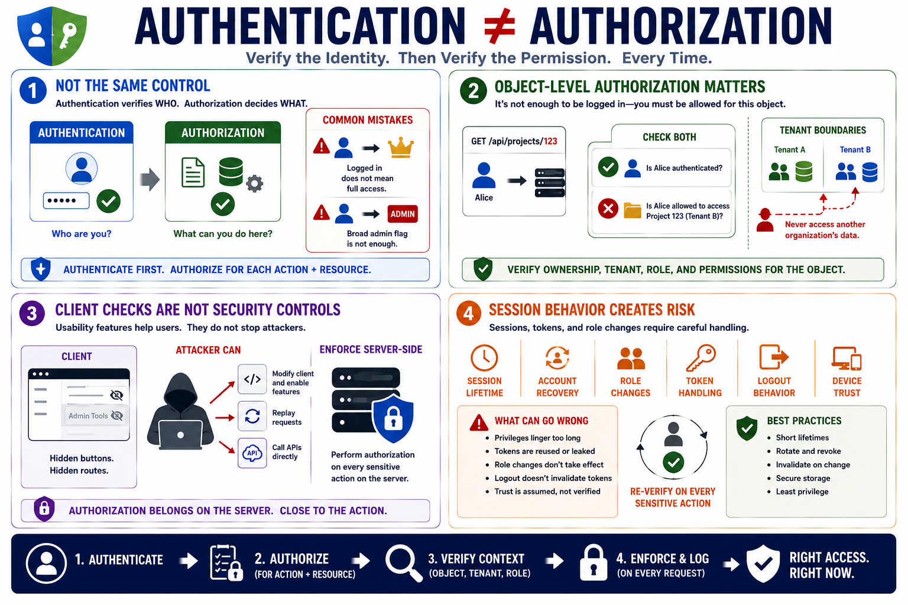

Access Control and Session Mistakes
Connecting to LMS... Progress: in progress

Narration
Authentication and authorization are related, but they are not the same control. Authentication verifies who or what is making a request. Authorization decides whether that authenticated subject is allowed to perform a specific action on a specific resource. A common mistake is treating a logged-in session as permission to do too much. Another is checking for a broad administrator flag when the real decision should be narrower and tied to the operation being requested.
Object-level authorization is especially important. A Python API may check that a user is authenticated before loading a record, file, project, tenant, or report, but still fail to verify that this user is allowed to access that particular object. Tenant boundaries need the same attention. A user from one organization should not be able to reach another organization's data simply because an identifier, route, or background job path accepts a value.
Client-side checks, hidden buttons, and hidden routes are usability features, not sufficient security controls. Clients can be modified, requests can be replayed, and APIs can be called directly. Sensitive checks should be enforced server-side and close to the action. Export operations, bulk updates, administrative tools, background jobs, and support workflows need authorization review just as much as ordinary user interface paths.
Session behavior also creates subtle mistakes. Unsafe assumptions about session lifetime, account recovery, role changes, token handling, logout, and device trust can undermine otherwise sound access control. Tokens and session identifiers should be handled as sensitive material. When privileges change, the application should have a clear story for what happens to existing sessions. Every sensitive action should verify whether the current caller is allowed to perform that specific operation at that specific time.